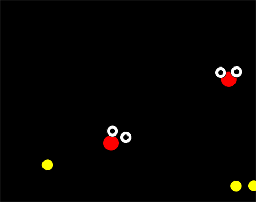

ポーズとインタラクションする（PoseNet）
カメラがとらえた画像から身体を検知し、目や腕、足の位置などにインタラクティブに応答するProcessingスケッチを作成します。ここでは、機械学習を使った身体のモーションキャプチャシステムのPoseNetを使います。RunwayML
PoseNetはRunwayMLが学習済みモデルを提供しています。RunwayMLは機械学習システムを自分のプログラムから容易に使えるように、操作のためのインターフェイスと計算量の多い機械学習システムを実行するコンピュータGPU（Graphics Processing Unit）を提供しているプロジェクトです。画像合成、物体検知、テキスト合成などさまざまな学習済みモデルが利用できます。
RunwayMLを介して、ローカル（自分のコンピュータ上）で機械学習システムを実行するのは無料ですが、RunwayMLが提供するGPUを使う場合は、GPU Creditが必要。Creditは買う必要があり、1分あたり5セント(US)。
次のようにRunwayMLからPoseNetを使う準備をします。
- (1) Runwayサイトからサインアップし、ログインする。
RunwayMLアプリをダウンロードするか、あるいはWebブラウザ上で利用することもできる。アプリを使うと機械学習システムの実行をローカルのCPUを使って行え、この場合Creditは不要です(リモートGPUしか使えない機械学習モデルもある)。 - (2)
ModelからPoseNetを選択する。
- (3)
新しくワークスペースを作る。New create workspace and add PoseNetのダイアログで、ワークスペースの名前を入力。
- (4)
InputでCameraあるいはFileを選択。
- (5) Interfaceタブでキャプチャの詳細を設定する。
- (6)
Networkタブで、OSCを選択し、Run LocallyあるいはRun Modelボタンをクリックする。
PoseNet
PoseNetは17のキーポイントを検出し、その結果をposes配列(JSONArray)に入れて送信します。その構造は次の通りです。
"scores": 精度の平均
"poses": 配列 [pose, pose, pose, …]
└─keypointsの配列 [keypoint, keypoint, keypoint, …]
└─位置情報 [x位置, y位置]
keypoints配列のインデックスと部位の名前は次の通りです。
- 0: nose
- 1: leftEye
- 2: rightEye
- 3: leftEar
- 4: rightEar
- 7: leftElbow
- 8: rightElbow
- 9: leftWrist
- 10: rightWrist
- 11: leftHip
- 12: rightHip
- 13: leftKnee
- 14: rightKnee
- 15: leftAnkle
- 16 rightAnkle
PoseNetからの情報を使うサンプル
Processingのスケッチで、PoseNetからOSCを介してデータを受け取り、処理をするには次のようにします。- (1) OSCとnetライブラリのインポート
import oscP5.*; import netP5.*;
- (2) OscP5オブジェクト用変数の定義
OscP5 oscP5;
- (3) NetAddressオブジェクト用変数の定義
NetAddress myBroadcast;
- (4) OSC受信データ中継のためのプロパティOscPropertiesオブジェクトを生成し、値を設定（setup()の中）
OscProperties properties = new OscProperties(); properties.setRemoteAddress("127.0.0.1", 57200); //PoseNetから受信するホストとIP properties.setListeningPort(57200); //PoseNetからのデータを受けるポート properties.setDatagramSize(99999999); //データバッファのパケットサイズを大きく properties.setSRSP(OscProperties.ON);//送信と受信のポート番号を同じにする - (5) 引数にプロパティを指定して、OscP5オブジェクトを生成（setup()の中）
oscP5 = new OscP5(this, properties);
- (6) NetAddressオブジェクトを生成。引数にPoseNetが動いているホストIPアドレス（ローカルホストなので"127.0.0.1"）とポート番号57100を指定（setup()の中）
myBroadcast = new NetAddress("127.0.0.1", 57100); - (7) connectメソッドを定義
void connect() { OscMessage m = new OscMessage("/server/connect"); oscP5.send(m, myBroadcast); } - (8) disconnectメソッドを定義
void disconnect() { OscMessage m = new OscMessage("/server/disconnect"); oscP5.send(m, myBroadcast); } - (9) connectメソッドを実行（setup()の中）
connect(); //PoseNetと接続 - (10) OSCメッセージを受け取ると呼び出されるoscEventメソッドを定義する。引数のデータ型はOscMessageで、受信データのアドレスパターンが"/data"であれば、引数データの先頭を取出し(get(0))、文字列に変換する。文字列はJSON形式なので、parseJSONObject関数で解析し、JSONObject型のデータに変換し、変数dataに入れている。draw関数内でこのdataからキーポイントの位置情報を取り出して使う。
JSONObject data; void oscEvent(OscMessage message) { //OSCからデータが来ると実行される if (!message.addrPattern().equals("/data")) return; String dataString = message.get(0).stringValue(); //JSON形式の文字列 data = parseJSONObject(dataString); //JSONObjectへ変換 }
【リストA5-1】
import processing.video.*; //カメラ画像を表示する場合
import oscP5.*; //(1)
import netP5.*; //(1)
String runwayHost = "127.0.0.1";
int runwayPort = 57100; //PoseNetのデータ送信ポート
OscP5 oscP5; //(2)
NetAddress myBroadcast; //(3)
JSONObject data;
Capture cam; //カメラ画像を表示する場合
void setup() {
size(640, 480);
OscProperties properties = new OscProperties(); //(4)
properties.setRemoteAddress(runwayHost, 57200); //PoseNetが動くホストのIP
properties.setListeningPort(57200); //PoseNetからのデータを受けるポート
properties.setDatagramSize(99999999); //データバッファのパケットサイズを大きく
properties.setSRSP(OscProperties.ON); //送信と受信のポート番号を同じにする
oscP5 = new OscP5(this, properties); //(5)ポート57200で聞く
myBroadcast = new NetAddress(runwayHost, runwayPort);//(6)PoseNetホスト
connect(); //(9)PoseNetと接続
cam = new Capture(this, 640, 480); //カメラ画像を表示する場合
cam.start(); //カメラ画像を表示する場合
}
void draw() {
if (cam.available() == true) { //カメラ画像を表示する場合
cam.read();
}
image(cam, 0, 0, width, height);
if (data != null) {
JSONArray poses = data.getJSONArray("poses");
if (poses.size()>0) {
JSONArray human = poses.getJSONArray(0); //配列posesの先頭要素（ひとりめ）
JSONArray nose = human.getJSONArray(0); //先頭は鼻
float x = nose.getFloat(0);
float y = nose.getFloat(1);
JSONArray eyeL = human.getJSONArray(1); //左目
JSONArray eyeR = human.getJSONArray(2); //右目
//両目の間隔で鼻に描く円の大きさを変える
float d = dist(eyeL.getFloat(0), eyeL.getFloat(1),
eyeR.getFloat(0), eyeR.getFloat(1));
fill(255, 0, 0);
ellipse(x*width, y*height, d*width, d*width);
x = eyeL.getFloat(0); //左目
y = eyeL.getFloat(1);
fill(255);
ellipse(x*width, y*height, 25, 25);
fill(0);
ellipse(x*width, y*height, 10, 10);
x = eyeR.getFloat(0); //右目
y = eyeR.getFloat(1);
fill(255);
ellipse(x*width, y*height, 25, 25);
fill(0);
ellipse(x*width, y*height, 10, 10);
//手首
fill(255, 255, 0);
ellipse(human.getJSONArray(9).getFloat(0)*width,
human.getJSONArray(9).getFloat(1)*height, 25, 25);
ellipse(human.getJSONArray(10).getFloat(0)*width,
human.getJSONArray(10).getFloat(1)*height, 25, 25);
}
} else {
println("data is null");
}
}
void oscEvent(OscMessage message) { //(10)OSCからデータが来ると実行される
if (!message.addrPattern().equals("/data")) return;
String dataString = message.get(0).stringValue(); //JSON形式の文字列
data = parseJSONObject(dataString);
println(data);
println("/////////////////////////////");
}
void connect() { //(7) connectメソッドを定義
OscMessage m = new OscMessage("/server/connect");
oscP5.send(m, myBroadcast);
}
void disconnect() { //(8) disconnectメソッドを定義
OscMessage m = new OscMessage("/server/disconnect");
oscP5.send(m, myBroadcast);
}
演習問題

【問題A5-1】リストA5_1を変更して、複数の人のポーズを検知したら、その人数だけ、目、鼻、手首が描かれるようにしてみよう。
【問題A5-2】 Processingサンプルの[Topics][Simulate]のSimpleParticleSystemのParticle.pdeとParticleSystem.pdeを使い、手首の位置から噴水のように粒子が噴き出すスケッチを作ってみよう。